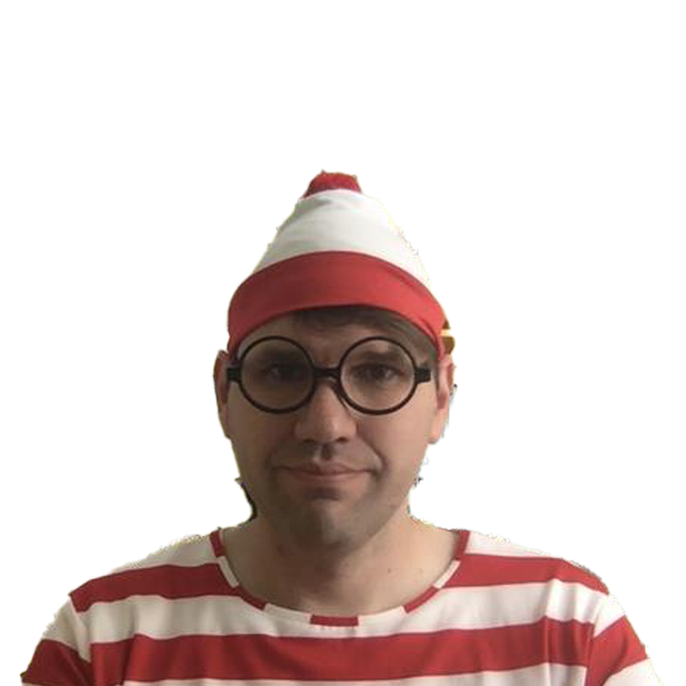

Tyler
About Tyler

Tyler
The king of getting out of stand up
About Tyler
Bio
Tyler is a famous singer from the United States. She was born on December 13, 1989, in Reading, Pennsylvania. When Taylor was a young girl...
Bio
Lehi

About Lehi
Lehi
Today is the first friday Lehi has worked in 6 years
About Lehi
Bio
Lehi is a famous singer and songwriter from England. He was born on February 17, 1991, in Hebden Bridge, West Yorkshire...